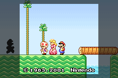
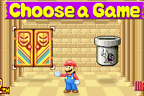

Super Mario Advance (USA) (Demo) (Kiosk)
Stateless / Passcode 💾 MultiBoot 🎮 4P Link
Cartridge Identity
- Game Code
AMZE(FamilyAMZ)- Header Title
SUPER MARIOA- Maker / Revision
01/ rev0- ROM Size
- 4.0 MiB (4,194,304 B)
- Save Media
None / Unknown- SHA-256
dcedd46c525cb47ed963a5b24f320aa0646cbeb46811ac20a85d9e7b5f0f3e8e- Engine / SDK Group
comm-009(51 families)
Screenshots


Link Cable & Multiplayer Communications
This title contains detected communication capabilities: 💾 MultiBoot 🎮 4P Link.
Detailed protocol specifications, SIO registers, Joybus commands, and MultiBoot sequences are documented in the Link & Multiplayer Reference.
- Multi-Player SIO (4P)
- 16-bit ring network · SIOCNT (
0x04000128) literals:0x002398,0x002490,0x002524· SIODATA32/SIOMULTI0 (0x04000120) literals:0x002778,0x002b98,0x005e88 - Single-Cart MultiBoot
- Single-Cartridge MultiBoot (Download Play) client/server handler · Thumb SWI 0x25 (
0xDF25):0x0b662a,0x1d65e6,0x2320fc,0x2acb8c
Cartridge Storage Architecture: Stateless / Passcode
Zero non-volatile battery hardware: This cartridge PCB contains ROM only (no SRAM, Flash, or EEPROM chips). Progression is preserved via on-screen passcodes or session-only gameplay. No
.sav file is generated or required.
ROM Assets, Compression & Audio
- BIOS Compression
- LZ77 (
0x10): 4 streams · RLE (0x30): 0 streams - ROM Pointer Tables
- 15 tables (1 pointing to validated compressed streams)
- SDK Backup Tags
EEPROM_V120
Asset Map (formatkit.asset-map.v1)
Download AMZE-r0-dcedd46c525cb47e.asset-map.json.gz (57,284 B (55.9 KiB)) Verified PASS · 5.85% coverage
| Metric | Bytes / Value | Entries |
|---|---|---|
| Identified | 145,396 B (142.0 KiB) (3.47%) | 434 |
| Mapped | 0 B (0.00%) | 0 |
| Opaque | 100,124 B (97.8 KiB) (2.39%) | 1 |
| Unknown | 3,948,784 B (3.77 MiB) (94.15%) | 376 |
| Total ROM Size | 4,194,304 B (4.00 MiB) | 811 |
| Coverage % | 5.85% | — |
| Entries w/ Code Refs | 472 / 811 (58.20%) | — |
Top Identified Formats: gfx.gba-palette (420 · 62,400 B (60.9 KiB)) · compress.bios-huffman (7 · 52,616 B (51.4 KiB)) · rom.multiboot (1 · 21,232 B (20.7 KiB)) · compress.bios-lz77 (4 · 5,380 B (5.3 KiB)) · audio.m4a-song-table (1 · 3,576 B (3.5 KiB)) · gba.rom-header (1 · 192 B)
Largest unknown Extents (Headerless / Custom Asset Candidates)
| Offset | Size | Shannon Entropy | Code Refs |
|---|---|---|---|
0x0021DFF8 | 620,140 B (605.6 KiB) | 6.769 bits/B | 0 |
0x00168464 | 554,096 B (541.1 KiB) | 7.011 bits/B | 0 |
0x00120034 | 295,952 B (289.0 KiB) | 6.746 bits/B | 0 |
0x001F43E4 | 157,512 B (153.8 KiB) | 7.059 bits/B | 0 |
0x00393C60 | 140,708 B (137.4 KiB) | 6.293 bits/B | 0 |
gzip -dk AMZE-r0-dcedd46c525cb47e.asset-map.json.gz && gbakit map verify rom.gba AMZE-r0-dcedd46c525cb47e.asset-map.json
gbakit assets export rom.gba --asset-map AMZE-r0-dcedd46c525cb47e.asset-map.json -o out/Text, Fonts & Scene Data
- Primary Text Encoding
- 16-bit / UTF-16LE text (
17ASCII strings) - Font & VWF Indicators
- VWF Width Table 1bpp Font · BIOS SWIs: BitUnPack
0x10:3· LZ770x11/12:14· Huffman0x13:6· RLE0x14/15:10 - Scene & Packaging
60ROM pointer tables (≥32 entries,40≥200) ·0relativeu32TOCs ·281OAM metasprite hits